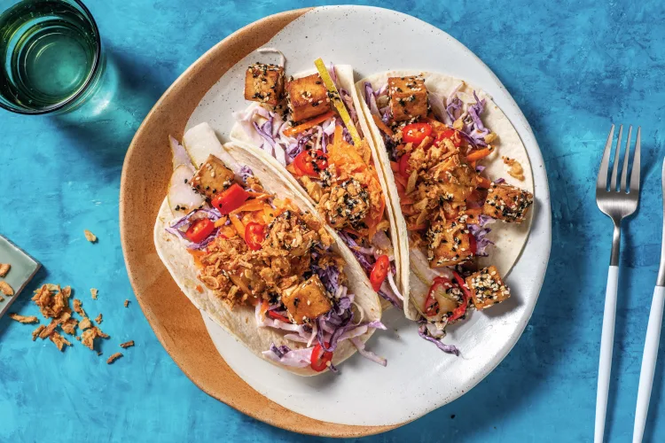

Quick Tofu Katsu Tacos

Description
Get excited for dinner!
These colourful handfuls are bursting with deliciousness from the sweet and tangy katsu-glazed tofu, spiked with sesame seeds for a nutty depth of flavour.
Ingridients
- Garlic (1 clove)
- 1 Pear
- 1 Carrot
- Shredded cabbage (1 bag)
- Garlic aioli (1 packet)
- Mixed sesame seeds (1 packet)
- Katsu sauce (1 packet)
- 6 Flour tortillas
- Olive oil
- Red Chilli (1/2)
- Crispy shallots
- Firm tofu (1 packet)
- Honey (1 tbsp)
Steps
-
- Finely chop garlic.
- Cut tofu into 1cm cubes. Set aside.
- Grate carrot. Thinly slice pear. Set aside.
- In a medium bowl, combine shredded cabbage mix and garlic aioli. Season to taste. Set aside.
-
- In a small bowl, combine garlic, the honey, katsu paste, mixed sesame seeds and a dash of water.
- Set aside.
-
- In a large frying pan, heat a drizzle of olive oil over medium-high heat. Cook tofu, turning often, until browned.
- Add katsu mixture and cook, turning tofu to coat, until slightly sticky.
- Microwave mini flour tortillas on a plate in 10 second bursts, until warmed through.
-
- Finely slice long chilli.
- Fill tortillas with creamy slaw, pear, carrot and tofu katsu.
- Sprinkle with chilli and crispy shallots to serve.
- Enjoy!